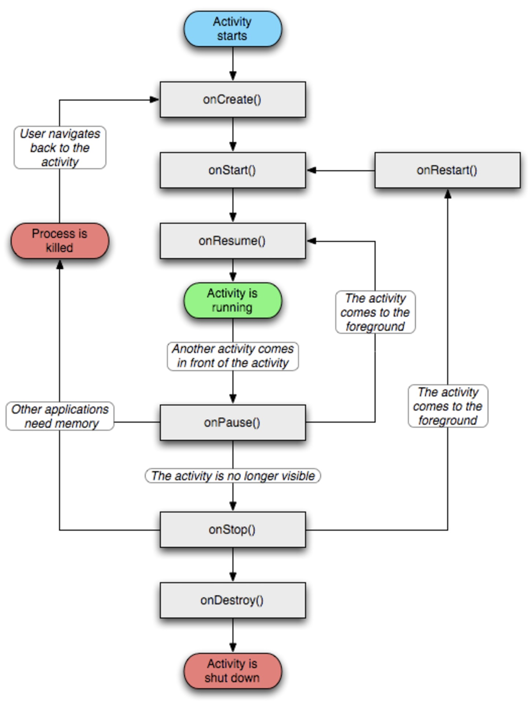

<!DOCTYPE html>


  <html class="light page-post">


<head>
  <meta charset="utf-8">
  
  <title>Activity的生命周期和启动模式 | SmartNi</title>

  <meta name="viewport" content="width=device-width, initial-scale=1, maximum-scale=1">

  
    <meta name="keywords" content="Android," />
  

  <meta name="description" content="Android中我们最先接触到的就是Activity，如果掌握了 Activity，那么对学习其他四大组件无疑是很有帮助的。">
<meta name="keywords" content="Android">
<meta property="og:type" content="article">
<meta property="og:title" content="Activity的生命周期和启动模式">
<meta property="og:url" content="http://yoursite.com/2017/06/08/00001-Android-2017-06-08-Activity的生命周期和启动模式/index.html">
<meta property="og:site_name" content="SmartNi">
<meta property="og:description" content="Android中我们最先接触到的就是Activity，如果掌握了 Activity，那么对学习其他四大组件无疑是很有帮助的。">
<meta property="og:image" content="http://yoursite.com/2017/06/08/00001-Android-2017-06-08-Activity的生命周期和启动模式/Activity的生命周期.png">
<meta property="og:updated_time" content="2017-07-03T02:23:21.000Z">
<meta name="twitter:card" content="summary">
<meta name="twitter:title" content="Activity的生命周期和启动模式">
<meta name="twitter:description" content="Android中我们最先接触到的就是Activity，如果掌握了 Activity，那么对学习其他四大组件无疑是很有帮助的。">
<meta name="twitter:image" content="http://yoursite.com/2017/06/08/00001-Android-2017-06-08-Activity的生命周期和启动模式/Activity的生命周期.png">

  

  
    <link rel="icon" href="/favicon.ico">
  

  <link href="/css/styles.css?v=c114cbe6" rel="stylesheet">


  
    <link rel="stylesheet" href="/css/bg_content.css">
  

  

  
  <script type="text/javascript">
    var _hmt = _hmt || [];
    (function() {
      var hm = document.createElement("script");
      hm.src = "//hm.baidu.com/hm.js?57e94d016e201fba3603a8a2b0263af0";
      var s = document.getElementsByTagName("script")[0];
      s.parentNode.insertBefore(hm, s);
    })();
  </script>


  
  <script type="text/javascript">
	(function(){
	    var bp = document.createElement('script');
	    var curProtocol = window.location.protocol.split(':')[0];
	    if (curProtocol === 'https') {
	        bp.src = 'https://zz.bdstatic.com/linksubmit/push.js';        
	    }
	    else {
	        bp.src = 'http://push.zhanzhang.baidu.com/push.js';
	    }
	    var s = document.getElementsByTagName("script")[0];
	    s.parentNode.insertBefore(bp, s);
	})();
  </script>


  
    <script async src="https://dn-lbstatics.qbox.me/busuanzi/2.3/busuanzi.pure.mini.js"></script>
  

  
    <link rel="stylesheet" href="//cdn.bootcss.com/font-awesome/4.3.0/css/font-awesome.min.css">
  


<!-- CSS and JS -->
<script src="//cdn.bootcss.com/jquery/2.2.0/jquery.min.js"></script>
<!-- <link rel="stylesheet" href="//cdn.bootcss.com/bootstrap/3.3.6/css/bootstrap.min.css">
<link rel="stylesheet" href="//cdn.bootcss.com/bootstrap/3.3.6/css/bootstrap-theme.min.css">
<script src="//cdn.bootcss.com/bootstrap/3.3.6/js/bootstrap.min.js"></script>
<script src="//cdn.bootcss.com/sidr/2.2.1/jquery.sidr.min.js"></script> -->
<!-- <script src="/js/jquery.bootstrap-autohidingnavbar.min.js"></script> -->
<!-- <link rel="stylesheet" href="//cdn.bootcss.com/sidr/2.2.1/stylesheets/jquery.sidr.dark.min.css">
<link rel="stylesheet" href="//cdn.bootcss.com/highlight.js/9.6.0/styles/github.min.css">
<script src="//cdn.bootcss.com/highlight.js/9.6.0/highlight.min.js"></script>
<script src="//cdn.bootcss.com/fancybox/2.1.5/jquery.fancybox.pack.js"></script>
<link rel="stylesheet" href="//cdn.bootcss.com/fancybox/2.1.5/jquery.fancybox.min.css">
<link rel="stylesheet" href="//cdn.bootcss.com/fancybox/2.1.5/helpers/jquery.fancybox-buttons.css">
<script src="//cdn.bootcss.com/fancybox/2.1.5/helpers/jquery.fancybox-buttons.js"></script>
<script src="//cdn.bootcss.com/zclip/1.1.2/jquery.zclip.min.js"></script> -->


<!-- 添加行号  2017年07月06日06:06:00-->
<script>
  // numbering for pre>code blocks
  // $(function(){
  //     $('pre code').each(function(){
  //         var lines = $(this).text().split('\n').length - 1;
  //         var $numbering = $('<ul/>').addClass('pre-numbering');
  //         $(this)
  //             .addClass('has-numbering')
  //             .parent()
  //             .append($numbering);
  //         for(i=1;i<=lines;i++){
  //             $numbering.append($('<li/>').text(i));
  //         }
  //     });
  // });

</script>
<!-- 添加行号 2017年07月06日06:06:00-->


<!-- 自定义代码块样式  2017年07月05日08:36:14-->

<link rel="stylesheet" href="//cdn.bootcss.com/highlight.js/9.2.0/styles/solarized-light.min.css">
<script src="//cdn.bootcss.com/highlight.js/9.2.0/highlight.min.js"></script>

<script>hljs.initHighlightingOnLoad();</script>

<!-- 自定义代码块样式 2017年07月05日08:36:17-->

</head>

<body>


  
    <span id="toolbox-mobile" class="toolbox-mobile">盒子</span>
  

  <div class="post-header CENTER">
   
  <div class="toolbox">
    <a class="toolbox-entry" href="/">
      <span class="toolbox-entry-text">盒子</span>
      <i class="icon-angle-down"></i>
      <i class="icon-home"></i>
    </a>
    <ul class="list-toolbox">
      
        <li class="item-toolbox">
          <a
            class="CIRCLE"
            href="/archives/"
            rel="noopener noreferrer"
            target="_self"
            >
            博客
          </a>
        </li>
      
        <li class="item-toolbox">
          <a
            class="CIRCLE"
            href="/category/"
            rel="noopener noreferrer"
            target="_self"
            >
            分类
          </a>
        </li>
      
        <li class="item-toolbox">
          <a
            class="CIRCLE"
            href="/tag/"
            rel="noopener noreferrer"
            target="_self"
            >
            标签
          </a>
        </li>
      
        <li class="item-toolbox">
          <a
            class="CIRCLE"
            href="/link/"
            rel="noopener noreferrer"
            target="_self"
            >
            友链
          </a>
        </li>
      
        <li class="item-toolbox">
          <a
            class="CIRCLE"
            href="/about/"
            rel="noopener noreferrer"
            target="_self"
            >
            关于
          </a>
        </li>
      
        <li class="item-toolbox">
          <a
            class="CIRCLE"
            href="/atom.xml"
            rel="noopener noreferrer"
            target="_blank"
            >
            RSS
          </a>
        </li>
      
        <li class="item-toolbox">
          <a
            class="CIRCLE"
            href="/search/"
            rel="noopener noreferrer"
            target="_self"
            >
            搜索
          </a>
        </li>
      
    </ul>
  </div>


</div>


  <div id="toc" class="toc-article">
    <strong class="toc-title">文章目录</strong>
    <ol class="toc"><li class="toc-item toc-level-1"><a class="toc-link" href="#Activity-的生命周期"><span class="toc-text">Activity 的生命周期</span></a><ol class="toc-child"><li class="toc-item toc-level-2"><a class="toc-link" href="#情形一"><span class="toc-text">情形一</span></a></li><li class="toc-item toc-level-2"><a class="toc-link" href="#情形二"><span class="toc-text">情形二</span></a></li><li class="toc-item toc-level-2"><a class="toc-link" href="#情形三"><span class="toc-text">情形三</span></a></li><li class="toc-item toc-level-2"><a class="toc-link" href="#异常情况"><span class="toc-text">异常情况</span></a><ol class="toc-child"><li class="toc-item toc-level-3"><a class="toc-link" href="#扩展"><span class="toc-text">扩展</span></a></li><li class="toc-item toc-level-3"><a class="toc-link" href="#还有一点"><span class="toc-text">还有一点</span></a></li><li class="toc-item toc-level-3"><a class="toc-link" href="#解决办法"><span class="toc-text">解决办法</span></a></li></ol></li></ol></li><li class="toc-item toc-level-1"><a class="toc-link" href="#Activity-的LaunchMode"><span class="toc-text">Activity 的LaunchMode</span></a></li></ol>
  </div>


<div class="content content-post CENTER">
   <article id="post-00001-Android-2017-06-08-Activity的生命周期和启动模式" class="article article-type-post" itemprop="blogPost">
  <header class="article-header">
    <h1 class="post-title">Activity的生命周期和启动模式</h1>

    <div class="article-meta">
      <span>
        <i class="icon-calendar"></i>
        <span>2017.06.08</span>
      </span>

      
        <span class="article-author">
          <i class="icon-user"></i>
          <span>SmartNi</span>
        </span>
      

      


      
        <span>
          <i class="icon-comment"></i>
          <a href="http://www.nijun.me/2017/06/08/00001-Android-2017-06-08-Activity的生命周期和启动模式/#disqus_thread"></a>
        </span>
      

      
      <i class="fa fa-eye"></i> 
        <span id="busuanzi_container_page_pv">
           &nbsp热度 <span id="busuanzi_value_page_pv">
           <i class="fa fa-spinner fa-spin"></i></span>℃
        </span>
      

      
      
    </div>
  </header>

  <div class="article-content">
    
      <p>Android中我们最先接触到的就是Activity，如果掌握了 Activity，那么对学习其他四大组件无疑是很有帮助的。</p>
<a id="more"></a>
<h1 id="Activity-的生命周期"><a href="#Activity-的生命周期" class="headerlink" title="Activity 的生命周期"></a>Activity 的生命周期</h1><p></p>
<h2 id="情形一"><a href="#情形一" class="headerlink" title="情形一"></a>情形一</h2><p>例如：运行一个 Activity ，不进行任何的页面跳转，然后按下返回键结束。</p>
<pre><code class="shell">05-30 12:00:44.864 3561-3561/me.nijun.launchmode I/AActivity: onCreate: A
05-30 12:00:44.864 3561-3561/me.nijun.launchmode I/AActivity: onStart: A
05-30 12:00:44.864 3561-3561/me.nijun.launchmode I/AActivity: onResume: A
05-30 12:00:44.864 3561-3561/me.nijun.launchmode I/AActivity: onPause: A
05-30 12:00:44.864 3561-3561/me.nijun.launchmode I/AActivity: onStop: A
05-30 12:00:44.864 3561-3561/me.nijun.launchmode I/AActivity: onDestory: A
</code></pre>
<h2 id="情形二"><a href="#情形二" class="headerlink" title="情形二"></a>情形二</h2><p>（1）当第一次启动 A Activity 的时候，会按照下面的顺序执行。</p>
<pre><code class="shell">05-30 12:00:44.864 3561-3561/me.nijun.launchmode I/AActivity: onCreate: A
05-30 12:00:44.864 3561-3561/me.nijun.launchmode I/AActivity: onStart: A
05-30 12:00:44.864 3561-3561/me.nijun.launchmode I/AActivity: onResume: A
</code></pre>
<p><code>onStart</code> 的时候 Activity 还在后台，<code>onResume</code> 的时候才会显示到前台。</p>
<p>（2）这时候点击按钮启动 B Acitivity 的时候</p>
<pre><code class="Shell">05-30 12:00:56.869 3561-3561/me.nijun.launchmode I/AActivity: onPause: A
05-30 12:21:03.756 4030-4030/me.nijun.launchmode I/BActivity: onCreate: B
05-30 12:00:56.882 3561-3561/me.nijun.launchmode I/BActivity: onStart: B
05-30 12:00:56.883 3561-3561/me.nijun.launchmode I/BActivity: onResume: B
05-30 12:00:57.310 3561-3561/me.nijun.launchmode I/AActivity: onSaveInstanceState: A
05-30 12:00:57.312 3561-3561/me.nijun.launchmode I/AActivity: onStop: A
</code></pre>
<p>可见，首先调用旧Activity的 <code>onpause</code> 方法，<code>onpause</code> 一定在要启动的新 Activity 之前执行，只有它执行完之后，新的 Activity 才会启动。正因为如此，我们在 onPause方法中不能重量级的操作，应当在 onStop 中处理操作，使新 Activity 尽快显示出来。</p>
<p><code>onSaveInstanceState</code> 方法会在 <code>onStop</code> 方法之前执行，但具体是否在<code>onPause</code> 之前还是之后是不确定的。</p>
<p><code>onStop</code> 方法是否执行是看 Activity 是否可见，如果用户回到桌面（不可见了），那么就会调用这个方法。但是如果如果调用新的 Activity 采用了新透明的主题，那么是<strong>不会调用<code>onStop</code></strong> 方法的。</p>
<p>（3）当用户按下返回键的时候</p>
<p> 这时候 BAcitivity 将被销毁。在 <code>onPause</code> 执行后，并不会直接执行 <code>onStop</code> 而是会先执行 AActivity 的 onRestart 、onStart、onResume 方法。</p>
<pre><code class="shell">05-30 12:21:11.422 4030-4030/me.nijun.launchmode I/BActivity: onPause: B
05-30 12:21:11.433 4030-4030/me.nijun.launchmode I/AActivity: onRestart: A
05-30 12:21:11.433 4030-4030/me.nijun.launchmode I/AActivity: onStart: A
05-30 12:21:11.433 4030-4030/me.nijun.launchmode I/AActivity: onResume: A
05-30 12:21:11.764 4030-4030/me.nijun.launchmode I/BActivity: onStop: B
05-30 12:21:11.765 4030-4030/me.nijun.launchmode I/BActivity: onDestroy: B
</code></pre>
<p>（4）当Activity被系统回收后再次打开，生命周期回调方法和 （1）一样，但是不是所有过程都一样。</p>
<p>小结：</p>
<ol>
<li>onCreate 和 onDestory 是配对的，代表这创建和销毁。</li>
<li>onStart 和 onStop 是配对的，代表着 Activity 是否可见。</li>
<li>onResume 和 onPause 是配对的，代表的 Activity 是否在前台。</li>
<li>A Activity 的生命周期：<ol>
<li>A 被 B 完全遮挡住了：onCreate-&gt;onStart-&gt;onResume-&gt;onPause-&gt;onStop-&gt;onRestart-&gt;onStart-&gt;onResume。</li>
<li>A 被 B 部分遮挡住了：onCreate-&gt;onStart-&gt;onResume-&gt;onPause-&gt;onResume。</li>
</ol>
</li>
</ol>
<h2 id="情形三"><a href="#情形三" class="headerlink" title="情形三"></a>情形三</h2><p>我们启动 Activity 之后，然后点击按钮弹出 AlertDialog 。</p>
<p>Activity 的启动过程：onCreate-&gt;onStart-&gt;onResume</p>
<p>因为当启动和退出 Dialog 的时候 ，Activity 的状态始终没有改变。这样看来，Dialog 是 Activity 内部的界面，不会影响到 Activity 的生命周期。</p>
<h2 id="异常情况"><a href="#异常情况" class="headerlink" title="异常情况"></a>异常情况</h2><p>（1）相关资源的配置发生改变导致 Activity 被杀死并重新创建。</p>
<p>例子：比如用户转换屏幕，从竖屏切换到横屏。</p>
<p>这时候Activity被销毁，其 onPause、onStop、onDestroy都会被调用。这个过程中也会调用 onSaveInstanceState 方法来保存当前Activity的状态，这个方法会在onStop之前执行，顺序与onPause无关。注意：在正常情况下是不会调用这个方法的。</p>
<p>当Activity重新创建后，系统会调用 onRestoreInstanceState 方法，并把 onSaveInstanceState 保存的 Bundle 对象传递给onRestoreInstanceState和onCreate方法。</p>
<p>从时序上看，onRestoreInstanceState 会在 onStart 方法之后调用。</p>
<pre><code class="java">05-30 12:34:27.247 4030-4030/me.nijun.launchmode I/AActivity: onPause: A
05-30 12:34:27.247 4030-4030/me.nijun.launchmode I/AActivity: onSaveInstanceState: A
05-30 12:34:27.249 4030-4030/me.nijun.launchmode I/AActivity: onStop: A
05-30 12:34:27.249 4030-4030/me.nijun.launchmode I/AActivity: onDestroy: A
05-30 12:34:27.262 4030-4030/me.nijun.launchmode I/AActivity: onCreate:  A
05-30 12:34:27.262 4030-4030/me.nijun.launchmode I/AActivity: onStart: A
05-30 12:34:27.262 4030-4030/me.nijun.launchmode I/AActivity: onRestoreInstanceState: restore extra_test test
05-30 12:34:27.263 4030-4030/me.nijun.launchmode I/AActivity: onResume: A

  public void main(){

  }
</code></pre>
<h3 id="扩展"><a href="#扩展" class="headerlink" title="扩展"></a>扩展</h3><p>View 与 Activity 一样，也有 onSaveInstanceState 和 onRestoreInstanceState 两个方法。</p>
<p>关于保存和恢复View层次结构，系统的工作流程是这样的：首先Activity 在异常中止的情况下，会调用 onSaveInstanceState 去保存数据。 Activity 会委托 Window 去保存数据，Window再委托他上面的顶层容器去保存。顶层容器是一个ViewGroup，一般来说是 DecorView。顶层容器再去一一通知它的子元素去保存数据。</p>
<p>这是一种典型的委托思想，上层委托下层，父容器委托子元素去处理意见事情。这在Android中有很多实现，比如<strong>View的绘制过程、事件分发</strong>。</p>
<p>onSaveInstanceState 只会在 Activity 即将销毁并且有机会重新显示的情况下才会去调用。</p>
<h3 id="还有一点"><a href="#还有一点" class="headerlink" title="还有一点"></a>还有一点</h3><p>onRestoreInstanceState 和 onCreate 的区别：</p>
<p>onRestoreInstanceState 一旦被调用，其参数 Bundle 一定有值，而onCreate在正常启动的时候其参数Bundle为null。</p>
<p>官方推荐：使用 <strong>onRestoreInstanceState</strong> 去恢复保存的数据。</p>
<h3 id="解决办法"><a href="#解决办法" class="headerlink" title="解决办法"></a>解决办法</h3><p>如果不想要系统重新创建 Activity的话，可以指定在 AndroidManifest.xml 中指定 android:configChanges 的属性。</p>
<p>最好是加上 orientation|screenSize|keyboardHidden 这三个值，因为 Android 13 （ API13 ）之后，screen size 也会跟着屏幕横竖屏切换而改变。可以设置下列语句</p>
<pre><code>android:configChanges=&quot;orientation|screenSize|keyboardHidden&quot;
</code></pre><h1 id="Activity-的LaunchMode"><a href="#Activity-的LaunchMode" class="headerlink" title="Activity 的LaunchMode"></a>Activity 的LaunchMode</h1><p>路漫漫其修远兮，吾将上下而求索。—屈原《离骚》</p>
<p>今天，花了一个晚上的时间整理了一下 Activity 的 LaunchMode 启动模式。既然下定决心要走这一行，那么就从最基础的开始学起。</p>
<p>在 Android 中，一共由四种启动模式，分别是</p>
<ol>
<li>standard</li>
<li>singleTop</li>
<li>singleTask</li>
<li>singleInstance</li>
</ol>
<p>这里，我把这四个分成两组。</p>
<p>其中，<code>standard</code>  和 <code>singleTop</code> Activity 为一类，使用 <code>standard</code> 或 <code>singleTop</code> 启动模式的 Activity 可多次实例化。可以属于任何任务栈，并且可以位于活动堆栈的任何位置。但是通常，它们被启动到所调用的任务中栈中。</p>
<p>其中，standard 模式很简单，调用几次就创建几次。singleTop 与之类似，不同在于如果要启动的 Activity 已经在栈顶了，那么就不创建直接复用，并且调用 onNewIntent 方法。如果一个现有实例虽在目标任务内，但未处于堆栈顶部，或者虽然位于堆栈顶部，但不在目标任务中 — 则系统会创建一个新实例并将其推送到堆栈上。</p>
<p><code>singleTask</code> 和 <code>singleInstance</code> 为另一类。<code>singleTask</code> 和 <code>singleInstance</code> Activity 只能启动任务。 它们始终位于 Activity 堆栈的<strong>栈顶</strong>，并且每个栈中只能有一个相同的 Activity 。</p>
<p>singleTask 和 singleInstance 同样只在一个方面有差异。 singleTask 允许其他 Activity 成为其任务（必然是 standard 和 singleTask 的 Activity ）的组成部分，它始终位于其任务的根位置。singleInstance 不允许其他 Activity 成为其任务的组成部分。它是任务中唯一的 Activity。 如果它启动另一个 Activity，系统会将该 Activity 分配给其他任务 — 就好像 Intent 中包含 <code>FLAG_ACTIVITY_NEW_TASK</code> 一样。</p>
<p>我自己做了一个实验。分别创建两个程序，一个叫做 LaunchMode，有 Activity A 和 Activity B，另一个叫做 LaunchModeB，有 Activity C 和 Activity D。在 Android 6.0 上运行。</p>
<ul>
<li>情形一</li>
</ul>
<p>前置条件：LaunchMode中从 A 启动 B（这时任务栈是 B-&gt;A），LaunchModeB 从 C 启动 D（这时任务栈是 D-&gt;C），这时我想从 B 中 启动 C 和 Ｄ，其中 C 和 D 都是standard 模式。</p>
<p>结果：在 B 中启动 C 后（这时任务栈是 C-&gt;B-&gt;A），C 从当前 Activity 右侧出现，按下 back 键直接向右侧消失。D 也是这个情况。</p>
<p>首先，从右侧出现代表没有切换到其他的应用程序，而我们知道 C 和 D Activity 是 LaunchModeB 中的 Activity。那为什么不是打开 LaunchModeB 之后再启动 C Activity 呢？这时因为设置了 standard 这个启动模式，在这个例子中当前程序并没有创建新得任务栈，而是在 B Activity 所在的任务栈中将 C Activity 启动并加入其中。也就是说被启动的 Activity 会被加入到启动它的 Activity 中。</p>
<ul>
<li>情形二</li>
</ul>
<p>前置条件：LaunchMode中从 A 启动 B（这时任务栈是 B-&gt;A），LaunchModeB 从 C 启动 D（这时任务栈是 D-&gt;C ，我想从 B 中 启动 C 和 Ｄ，其中 C 是 standard 模式 ，D 都是 singleTask 模式。</p>
<p>结果：我在 B Activity 中点击启动 C ，这时和情形一是一样的，这里不讨论了。而如果点击启动 D 之后，系统发现在现有任务栈中已经有了 D Activity，这时候会并不会去创建新的，而是直接切换到 D Activity 所在的任务栈，这时候按下 back 键，将回退到 C Activity 中，再次按下 back 键，就销毁了LaunchModeB 中的任务栈。这时候再次在 B 中启动 D，这时候系统发现在任务栈中没有已有的 D，就会创建 D，并加入到新的任务栈中（这时任务栈是 D），按下 back 键就会直接销毁 Ｄ返回到 B Activity。</p>
<ul>
<li>情形三</li>
</ul>
<p>前置条件：LaunchMode中从 A 启动 B（这时任务栈是 B-&gt;A），LaunchModeB 从 C 启动 D（这时任务栈是 D-&gt;C ，我想从 B 中 启动 C 和 Ｄ，其中 C 是 singleTask 模式 ，D 都是 standard 模式。</p>
<p>结果：从 B 点击按钮打开 C （这时任务栈是 C ），singleTask 因为有 clearTop 的效果而被推出任务栈。在 C Activity 中再次打开 D Activity，不要按 back 键，选择任务返回到 B Activity，点击按钮打开 D Activity（这时任务栈是 D-&gt;B-&gt;A），发现动画效果是从右侧进入，断定此时这个 D Activity 所在的任务栈是 B Activity 所在的任务栈，因此这时按下 back 键，就不会返回到 C Activity，而是返回到 B Activity。</p>
<p>还有一点需要注意，当我从 C 中启动 D 之后，按下 Home 键返回桌面，在从桌面图标点击进入程序，发现进入的是 C Activity，而不是 D Activity。原因还是 C Activity 是 singleTask 模式。</p>
<ul>
<li>情形四</li>
</ul>
<p>还是上面的前置条件，但是 C 和 D 都是 singleTask 模式。情况与情形三类似，只是在打开 D Activity 的时候（这时任务栈是 D-&gt;C），当前任务栈转移到了 LaunchModeB 程序中，相当于打开了 LaunchMode 这个程序，而这时栈顶是 D ，所以出现的是 D Activity，按下返回键跳转到 C Activity。</p>
<p>另一种情况是在 Intent 中设置标志位来为 Activity 指定启动模式。这种方式优先于 AndroidManifest 中配置的方式，当两种同时存在时，以第二种方式为准。然后它们在限定范围上有所不同，第一种方式无法设置  FLAG_ACTIVITY_CLEAR_TOP 标志，而第二种方式无法指定 singleInstance 模式。</p>
<p><strong>FLAG_ACTIVITY_NEW_TASK</strong> </p>
<p>等同于 “singleTask” 。在这种情况下，被启动的 Activity 的实例如果已经存在，那么系统会调用他的 onNewIntent ，而不会去调用 onCreate 。但是不要忘记，系统可能会杀掉后台运行的 Activity，如果这一切发生，那么系统就会调用 onCreate 方法，而不调用 onNewIntent 方法，一个好的解决方法就是在 onCreate 和 onNewIntent 方法中调用同一个处理数据的方法。</p>
<p><strong>FLAG_ACTIVITY_SINGLE_TOP</strong></p>
<p>等同于 “singleTop” 。</p>
<p><strong>FLAG_ACTIVITY_CLEAR_TOP</strong></p>
<p>等同于 “singleTop” 。</p>
<p>在 Android Studio 中可以使用 <code>adb shell dumpsys activity</code> 来查看任务栈和 <code>taskAffinity</code> 的值。</p>
<p> <a href="http://android.xsoftlab.net/guide/topics/manifest/activity-element.html#aff" target="_blank" rel="external">taskAffinity</a></p>

    
  </div>
</article>


   
  <div class="text-center donation">
    <div class="inner-donation">
      <span class="btn-donation">支持一下</span>
      <div class="donation-body">
        <div class="tip text-center">扫一扫，支持SmartNi</div>
        <ul class="theme.donation.items.length">
        
          <li class="item">
            
          </li>
        
          <li class="item">
            
          </li>
        
        </ul>
      </div>
    </div>
  </div>


   
  <div class="box-prev-next clearfix">
    <a class="show pull-left" href="/2017/05/20/00001-maven-2017-05-20-maven/">
        <i class="icon icon-angle-left"></i>
    </a>
    <a class="show pull-right" href="/2017/06/14/00001-Android-2017-06-14-Android消息处理机制之三：Handler中sendMessage源代码剖析/">
        <i class="icon icon-angle-right"></i>
    </a>
  </div>


</div>


  <a id="backTop" class="back-top">
    <i class="icon-angle-up"></i>
  </a>


  <div class="modal" id="modal">
  <span id="cover" class="cover hide"></span>
  <div id="modal-dialog" class="modal-dialog hide-dialog">
    <div class="modal-header">
      <span id="close" class="btn-close">关闭</span>
    </div>
    <hr>
    <div class="modal-body">
      <ul class="list-toolbox">
        
          <li class="item-toolbox">
            <a
              class="CIRCLE"
              href="/archives/"
              rel="noopener noreferrer"
              target="_self"
              >
              博客
            </a>
          </li>
        
          <li class="item-toolbox">
            <a
              class="CIRCLE"
              href="/category/"
              rel="noopener noreferrer"
              target="_self"
              >
              分类
            </a>
          </li>
        
          <li class="item-toolbox">
            <a
              class="CIRCLE"
              href="/tag/"
              rel="noopener noreferrer"
              target="_self"
              >
              标签
            </a>
          </li>
        
          <li class="item-toolbox">
            <a
              class="CIRCLE"
              href="/link/"
              rel="noopener noreferrer"
              target="_self"
              >
              友链
            </a>
          </li>
        
          <li class="item-toolbox">
            <a
              class="CIRCLE"
              href="/about/"
              rel="noopener noreferrer"
              target="_self"
              >
              关于
            </a>
          </li>
        
          <li class="item-toolbox">
            <a
              class="CIRCLE"
              href="/atom.xml"
              rel="noopener noreferrer"
              target="_blank"
              >
              RSS
            </a>
          </li>
        
          <li class="item-toolbox">
            <a
              class="CIRCLE"
              href="/search/"
              rel="noopener noreferrer"
              target="_self"
              >
              搜索
            </a>
          </li>
        
      </ul>

    </div>
  </div>
</div>


  
      <div class="fexo-comments comments-post">
    
  <section class="disqus-comments">
    <div id="disqus_thread">
      <noscript>Please enable JavaScript to view the <a href="//disqus.com/?ref_noscript">comments powered by Disqus.</a></noscript>
    </div>
  </section>

  <script>
    var disqus_shortname = 'nimon';
    
    var disqus_url = 'http://yoursite.com/2017/06/08/00001-Android-2017-06-08-Activity的生命周期和启动模式/';
    
    (function(){
      var dsq = document.createElement('script');
      dsq.type = 'text/javascript';
      dsq.async = true;
      dsq.src = '//' + disqus_shortname + '.disqus.com/embed.js';
      (document.getElementsByTagName('head')[0] || document.getElementsByTagName('body')[0]).appendChild(dsq);
    })();
  </script>

  <script id="dsq-count-scr" src="//nimon.disqus.com/count.js" async></script>


    


    

    
	
  </div>

  

  <script type="text/javascript">
  function loadScript(url, callback) {
    var script = document.createElement('script')
    script.type = 'text/javascript';

    if (script.readyState) { //IE
      script.onreadystatechange = function() {
        if (script.readyState == 'loaded' ||
          script.readyState == 'complete') {
          script.onreadystatechange = null;
          callback();
        }
      };
    } else { //Others
      script.onload = function() {
        callback();
      };
    }

    script.src = url;
    document.getElementsByTagName('head')[0].appendChild(script);
  }

  window.onload = function() {
    loadScript('/js/bundle.js?235683', function() {
      // load success
    });
  }
</script>


<!-- 炫酷的动态背景图片 第一步 -->
  <div class="bg_content">
       <canvas id="canvas"></canvas>
  </div>
<!-- 炫酷的动态背景图片 第一步 -->


<!-- 炫酷的动态背景图片 第二步 -->
<script>
  //百度站长
    (function(){
        var bp = document.createElement('script');
        var curProtocol = window.location.protocol.split(':')[0];
        if (curProtocol === 'https'){
       bp.src = 'https://zz.bdstatic.com/linksubmit/push.js';
      }
      else{
      bp.src = 'http://push.zhanzhang.baidu.com/push.js';
      }
        var s = document.getElementsByTagName("script")[0];
        s.parentNode.insertBefore(bp, s);
    })();
    'use strict';

    var _createClass = function () { function defineProperties(target, props) { for (var i = 0; i < props.length; i++) { var descriptor = props[i]; descriptor.enumerable = descriptor.enumerable || false; descriptor.configurable = true; if ("value" in descriptor) descriptor.writable = true; Object.defineProperty(target, descriptor.key, descriptor); } } return function (Constructor, protoProps, staticProps) { if (protoProps) defineProperties(Constructor.prototype, protoProps); if (staticProps) defineProperties(Constructor, staticProps); return Constructor; }; }();

    function _possibleConstructorReturn(self, call) { if (!self) { throw new ReferenceError("this hasn't been initialised - super() hasn't been called"); } return call && (typeof call === "object" || typeof call === "function") ? call : self; }

    function _inherits(subClass, superClass) { if (typeof superClass !== "function" && superClass !== null) { throw new TypeError("Super expression must either be null or a function, not " + typeof superClass); } subClass.prototype = Object.create(superClass && superClass.prototype, { constructor: { value: subClass, enumerable: false, writable: true, configurable: true } }); if (superClass) Object.setPrototypeOf ? Object.setPrototypeOf(subClass, superClass) : subClass.__proto__ = superClass; }

    function _classCallCheck(instance, Constructor) { if (!(instance instanceof Constructor)) { throw new TypeError("Cannot call a class as a function"); } }

    var Circle = function () {
       function Circle(x, y) {
            _classCallCheck(this, Circle);

            this.x = x;
            this.y = y;
            this.r = Math.random() * 10;
            this._mx = Math.random();
            this._my = Math.random();
        }

       _createClass(Circle, [{
            key: 'drawCircle',
            value: function drawCircle(ctx) {
                ctx.beginPath();
                //arc() 方法使用一个中心点和半径，为一个画布的当前子路径添加一条弧。
                ctx.arc(this.x, this.y, this.r, 0, 360);
                ctx.closePath();
                ctx.fillStyle = 'rgba(204, 204, 204, 0.3)';
                ctx.fill();
            }
        }, {
            key: 'drawLine',
            value: function drawLine(ctx, _circle) {
                var dx = this.x - _circle.x;
                var dy = this.y - _circle.y;
                var d = Math.sqrt(dx * dx + dy * dy);
                if (d < 150) {
                    ctx.beginPath();

                    ctx.moveTo(this.x, this.y); //起始点
                    ctx.lineTo(_circle.x, _circle.y); //终点
                    ctx.closePath();
                    ctx.strokeStyle = 'rgba(204, 204, 204, 0.3)';
                    ctx.stroke();
                }
            }


        }, {
            key: 'move',
            value: function move(w, h) {
                this._mx = this.x < w && this.x > 0 ? this._mx : -this._mx;
                this._my = this.y < h && this.y > 0 ? this._my : -this._my;
                this.x += this._mx / 2;
                this.y += this._my / 2;
            }
        }]);

        return Circle;
    }();


    var currentCirle = function (_Circle) {
        _inherits(currentCirle, _Circle);

        function currentCirle(x, y) {
            _classCallCheck(this, currentCirle);

            return _possibleConstructorReturn(this, (currentCirle.__proto__ || Object.getPrototypeOf(currentCirle)).call(this, x, y));
        }

        _createClass(currentCirle, [{
            key: 'drawCircle',
            value: function drawCircle(ctx) {
                ctx.beginPath();

                //this.r = (this.r < 14 && this.r > 1) ? this.r + (Math.random() * 2 - 1) : 2;
                this.r = 8;
                ctx.arc(this.x, this.y, this.r, 0, 360);
                ctx.closePath();
                //ctx.fillStyle = 'rgba(0,0,0,' + (parseInt(Math.random() * 100) / 100) + ')'
                ctx.fillStyle = 'rgba(255, 77, 54, 0.6)';
                ctx.fill();
            }
        }]);

        return currentCirle;
    }(Circle);


    window.requestAnimationFrame = window.requestAnimationFrame || window.mozRequestAnimationFrame || window.webkitRequestAnimationFrame || window.msRequestAnimationFrame;

    var canvas = document.getElementById('canvas');
    var ctx = canvas.getContext('2d');
    var w = canvas.width = canvas.offsetWidth;
    var h = canvas.height = canvas.offsetHeight;
    var circles = [];
    var current_circle = new currentCirle(0, 0);

    var draw = function draw() {
        ctx.clearRect(0, 0, w, h);
        for (var i = 0; i < circles.length; i++) {
            circles[i].move(w, h);
            circles[i].drawCircle(ctx);
            for (j = i + 1; j < circles.length; j++) {
                circles[i].drawLine(ctx, circles[j]);
            }
        }
        if (current_circle.x) {
            current_circle.drawCircle(ctx);
            for (var k = 1; k < circles.length; k++) {
                current_circle.drawLine(ctx, circles[k]);
            }
        }
        requestAnimationFrame(draw);
    };

    var init = function init(num) {
        for (var i = 0; i < num; i++) {
            circles.push(new Circle(Math.random() * w, Math.random() * h));
        }
        draw();
    };
    window.addEventListener('load', init(60));
    window.onmousemove = function (e) {
        e = e || window.event;
        current_circle.x = e.clientX;
        current_circle.y = e.clientY;
    };
    window.onmouseout = function () {
        current_circle.x = null;
        current_circle.y = null;
    };
    </script>
<!-- 炫酷的动态背景图片 第二步 -->

</body>
</html>
